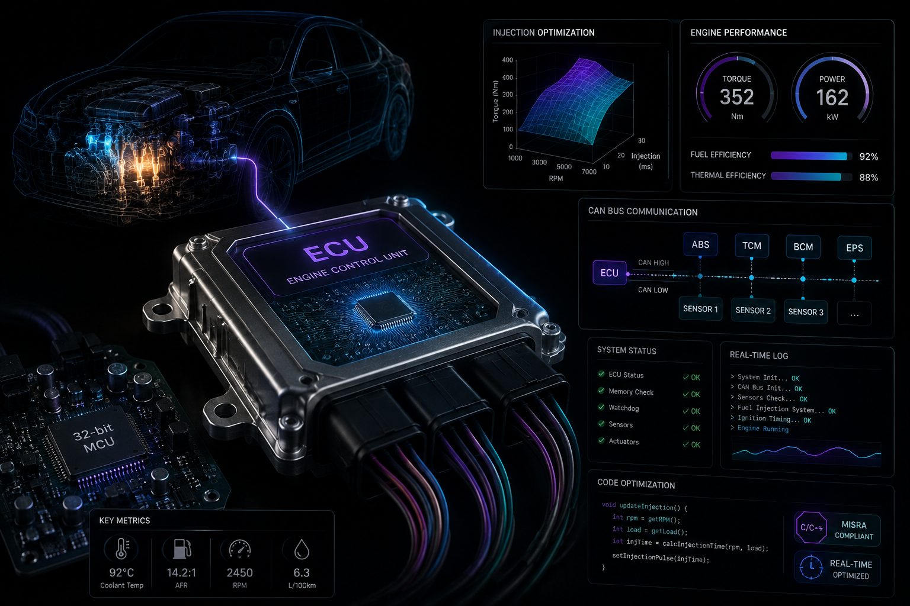
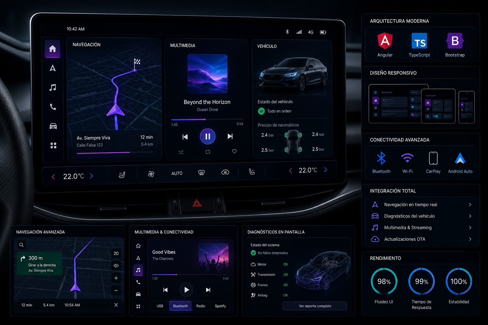
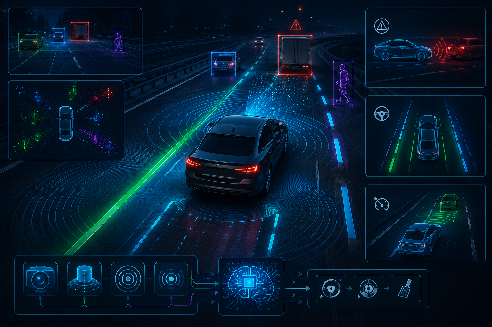
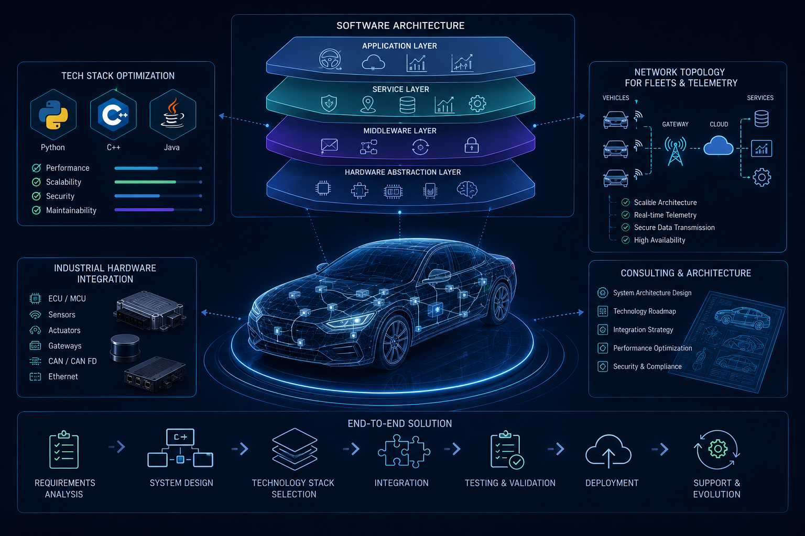

Servicios

Desarrollo de Sistemas Embebidos (ECU)
Desarrollo de firmware de bajo nivel y optimización de algoritmos de control para unidades de mando electrónico, garantizando eficiencia térmica y de combustible.
Capacidades:- Optimización de inyección y rendimiento del motor.
- Implementación de protocolos de comunicación CAN bus.
- Desarrollo en C/C++ para sistemas críticos de tiempo real.

Integración de IVI & HMI
Diseño y desarrollo de interfaces de Infotainment centradas en el usuario, con alta fluidez y conectividad multimedia avanzada.
Capacidades:- Arquitectura de interfaces con Angular y TypeScript.
- Diseño responsivo con Bootstrap para pantallas de vehículos.
- Integración de sistemas de navegación y diagnósticos en pantalla.
Validación y Pruebas Automotrices
Ciclo completo de testing para software vehicular, asegurando que cada línea de código cumpla con los estándares de seguridad funcional más rigurosos.
Capacidades:- Automatización de pruebas unitarias y de integración.
- Validación de protocolos de seguridad y resistencia a fallos.
- Uso de herramientas de diagnóstico y simulación de hardware.

Sistemas de Asistencia al Conductor
Implementación de software para la percepción del entorno y toma de decisiones automatizada para mejorar la seguridad activa del vehículo.
Capacidades:- Algoritmos de detección de objetos y frenado de emergencia.
- Procesamiento de señales de sensores de proximidad.
- Lógica para mantenimiento de carril y control de crucero adaptativo.
Ciberseguridad Vehicular & Redes
Protección integral de la infraestructura de comunicación del vehículo y configuración de redes seguras para la transferencia de datos crítica.
Capacidades:- Aseguramiento de comunicación V2X y protocolos de transferencia.
- Configuración de infraestructuras de red híbridas.
- Gestión de identidades y servicios de dominio seguros.

Consultoría Tecnológica & Arquitectura
Diseño de arquitectura de software de alto nivel para nuevos modelos de vehículos y modernización de flotas industriales.
Capacidades:- Optimización de stack tecnológico.
- Diseño de topologías de red y telemetría Cloud.
- Integración de hardware industrial y software moderno.